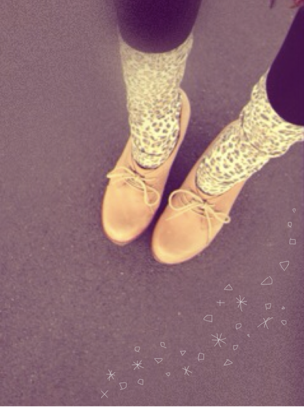

| 2011/12 17 Sat | 29回目*marika |
ベビたんよ:D
いつもありがとうございます。
みなさんのあったかいメッセージで
今日もほかほかしてます。
さ-む--いー!!
手がっ....手がぁぁ〜←
かっかじかんでっ
指先の感覚がないよ------ああー
みなさんも同じように
今手冷たいよね><
手袋をしても
どうしても寒いんですよね;
...........................
・オススメの曲教えて！
ゆるいロックバンドがすきです*＊。
GalileoGalileiさん
flumpoolさん
がすきです。
ジャズピアニストの
上原ひろみさん
めっちゃかっこいいので
聴いてみてください♡
・カラコンしてる？
してないです×!!
授業のときとかはメガネなんですけど
鼻にあとがつくから、
ほんとはコンタクトしたい......けど
こわくってできん泣←
・あしゅりんになぜバブちゃんって
名付けられたの？甘えたから？
なんでかな笑
あ!甘えてないですよ!!
お互いからかい合ってたのさぁ:-)ふふ
・いじられキャラなの？
....そうみたい。ぐすん←
・イメージカラーはある？
うーんなんだろなぁ??
何色だと思う^^?
・何色が好き？
この前は全色すきって言ってしまったけど
絞りますっ!!♪
赤,ピンク,紫,ターコイズブルー,カーキ,白,黒,茶
......です。
これでも多いですね 笑
・読書とかする？どんな本が好き？
山田悠介さんの本好きです＊
現実にない話に引き込まれて
一日で読んじゃいます!!
本だったらちょっと怖いのも読みます。
あと、泣けるものも好き＊
何かオススメの小説ありますかっ^^?
・母がもうすぐ誕生日で
何をあげたらいいやら...
何か思い付いたら教えて！
優しいですね**!!
手作り感のあるお手紙。
かわいいスリッパとか...
あったかいブランケットとか
どうでしょう??
私はかわいいワニの置物^^*
何気なくこれかわいい!と
言ってたのを覚えてたので
プレゼントしました!!
趣味が合うからね＊
・キャッチフレーズとかあるの？
『乃木坂46のベビーフェイス
ベビたんこと伊藤万理華』
.......です////←
・今ハマってる飲み物とかある？
あら!!この質問待ってましたっ笑
今いちご豆乳にめっちゃハマってるんですよ*
いちご,豆乳,はちみつ,
ちょとバナナ,ちょとヨーグルトを
ミキサーでぎゅいぃ-----んて混ぜるんです!!
朝に飲んでます♡
ココアも好きです!抹茶オレも!!
・れなと、しゃしんについて
「りんちゃん」ってからかってるだけ^^笑
今日もれなとわいわいしてたぁ☆
あのね!
どこ見てるか分からない自撮りはね!
髪にもらくがきしたけど、
色は赤じゃないよ!
ピンクだよ!!(どっちでもいい笑)
・ツリーのしゃしん
たぶん160cmくらいあるかな？
あっ!違うんだよ!!
あのしゃしんはね?
ちゃんとTVの横に置いてるけど、
みなさんに見せるために
きれいに写るように移動したんですっ!!
ちゃんときれいに見せれるように!!
ですX(
(必死!!笑)
・冬のセールとか行く予定？
あー!!行きたい♡
いいのあるかな~...
ほしい服いっぱいあるんです=33
今日はここまでっ
...........................
質問をしたのに忘れてるっ!!
というのがあれば言ってください!!
みなさんの質問には
できる限り返したいです***
いつもうれしいからね。えへ
髪型ほめてくださって
ありがとうございます♪るんるん
森ガールな感じ好きですか?
お団子して載せれたら載せます:)
あ!バレエのしゃしんも
載せれたら載せます☆
みなさんに合えるのももうすぐですね---＊
あー楽しみ♪るんるん
みなさんが会いたい、しゃべりたい
って言ってくださって
本当にうれしいです。
予定が合わなかった方、
わざわざ報告してくださって
ありがとうございます＊
残念××!!
会えるときは言ってくださいっ。
いつでも待ってます^^*
会いに来てくださる方!!
私うれしすぎて、
顔がにやにやしちゃうかも...！
冷え性なので、
みなさんの手を冷やしてしまったら
ごめんなさい。
私と握手をした時にみなさんの心が
ぽかぽかになりますように...!!
たくさんお話しできたらいいな。
風邪ひいてしまった方!!
体調はどうですか?
心配です;(!!
風邪をひいているのに
コメントしてくださって...
本当にやさしいです。
しっかりからだあっためてください!
私も風邪ひかないようにしなきゃっ。
みなさんも気をつけてください。
今日ミルフィーユ鍋だった♡
う〜んおいしい＊

画像どうやって大きさ変えるか
わかりました!!
鍋ちっちゃくしてごめんなさい
しゃしんはいつも大きい方がいいですか？

かわいい足下+。*＊.°。＊**
今日もお疲れさまりか＊
cHu

LOVE
ベビたん*****bA by marika